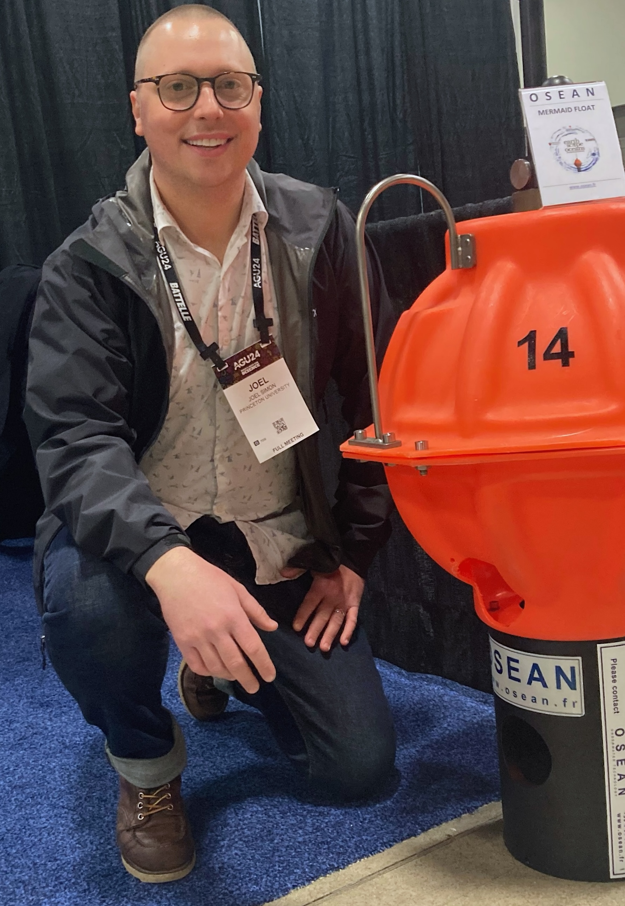

Joel D. Simon, Ph.D. — Founder and Chief Scientist
LinkedIn
GitHub
Google Scholar
ORCID
The founder and chief scientist, Joel D. Simon, holds a Ph.D. from Princeton University in geophysics, where he developed and published novel approaches for detecting and classifying signals in noisy data.
Dr. Simon then spent five years working at Princeton overseeing a global array of mobile marine MERMAID sensors while continuing to advance the field through peer-reviewed publications and software development. His software remains in active use worldwide.
He was elected to the Executive Committee of the International Federation of Digital Seismograph Networks, where he serves as a subject-matter expert in mobile geophysical instrumentation.
Today, he continues to consult for Princeton University and EarthScope-Oceans.
